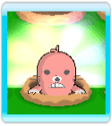
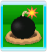

Écran de jeu
Écran de bataille (4 joueurs)
Fenêtre
Règle
Les taupes que vous écrasez s'affichent dans votre fenêtre. Lorsque quatre taupes y apparaissent, vous pouvez faire une "main" en fonction de leur couleur. Plus votre main est forte, plus vos adversaires perdent de l'énergie. Les joueurs qui n'ont plus d'énergie sont éliminés : le vainqueur est le survivant (ou le joueur ayant perdu le moins d'énergie à la fin du temps imparti).
Fin de partie
La partie est terminée lorsque le classement final est établi. La partie se termine immédiatement s'il ne reste plus que des joueurs contrôlés par l'ordinateur.
Liste des mains
|
Deux taupes de même couleur |
Dégâts légers |
|
Deux paires de taupes de même couleur |
Dégâts moyens |
|
Trois taupes de même couleur |
Dégâts importants |
 |
Quatre taupes de même couleur |
Dégâts considérables |
|
Quatre taupes de couleurs différentes |
Léger regain d'énergie |
Couleur des taupes et dégâts supplémentaires
Il existe six couleurs de taupes. Si les taupes de votre main sont de la même couleur que le marteau d'un adversaire, ce dernier sera plus durement touché que les autres.


Taupe arc-en-ciel
La taupe arc-en-ciel est un "joker" qui change automatiquement de couleur pour vous donner la meilleure main possible.

Boîte à objet
Frappez une boîte à objet pour obtenir le bonus qu'elle contient et dont voici la liste.
Recharge de jauge
 |
Permet de récupérer un peu d'énergie. |
Évasion des taupes
 |
Libère toutes les taupes prisonnières dans les fenêtres des autres joueurs. |
Gros marteau

|
Avec ce gros marteau, il est beaucoup plus facile d'écraser les taupes. |

Bombes
Si vous frappez une bombe, vous ne pourrez plus utiliser votre marteau pendant un certain temps.
Astuces
Surveillez les taupes qui sont sur le point d'apparaître et élaborez ainsi une stratégie pour réaliser une main. Visez les taupes qui vous donneront les meilleures mains. Vous pouvez aussi viser certaines taupes afin d'empêcher votre adversaire de réaliser des mains.